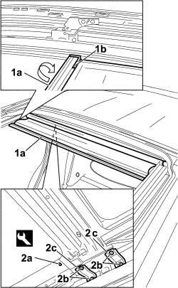
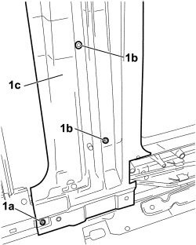
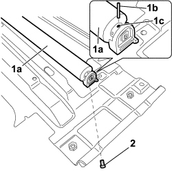
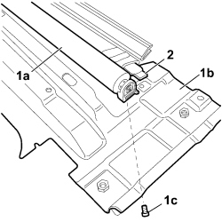

7030B29 ELECTRICALLY OPERATED SUN ROOF BLIND - R.R.
- Path
- Procedures > 70 FITTINGS > 7030 SUN ROOF/GLASS PANEL > 7030B SLIDING ROOF > 7030B29 ELECTRICALLY OPERATED SUN ROOF BLIND - R.R.
- Kind
- repair procedure (removal / refitting; the operation number is the code)
- Applies to
- all engines; all production periods
- Interactive page
- https://sloeber94.github.io/elrnDB-fCrm/en/#/194000976
Applies to: all engines; all production periods
 Removing
Removing
 Refitting
Refitting- Turn the ignition key to the OFF position.
- Disconnect the negative battery terminal.
Description | Connector | |
|---|---|---|
BATTERY |
(Both)
Op. 7065C33 SUN BLIND WITH COURTESY MIRROR AND COURTESY LIGHT ONE LH OR RH R R
(all)
Op. 7065C30 GRAB HANDLE (ONE) LEFT, RIGHT OR CENTRE PASSENGER COMPARTMENT INTERIOR - R.R
Op. 7040E51 FRONT MODULAR COURTESY LIGHT ASSEMBLY - R R FOR VERSIONS WITH SUN-ROOF
Op. 7040E46 REAR COURTESY LIGHT ASSEMBLY - R R
Op. 7040B26 LOAD PLATFORM COVER BLIND - R+R
FOR VERSIONS WHERE IT IS FITTED
Op. 7040B42 PROTECTION GRILLE FOR ANIMAL TRANSPORT - R and R
(Both)
Op. 7040B44 PROTECTIVE GRILL ATTACHMENT ONE R R
(Both)
Op. 7040H30 FRONT PILLAR TRIM (ONE), LEFT OR RIGHT - R.R.
FOR ALL VERSIONS
(Both)
Op. 7040L44 REAR DOOR RUNNING BOARD (ONE), LEFT OR RIGHT - R.R.
(Both)
Op. 7040H36 CENTRE PILLAR LOWER ELEMENT (ONE), LEFT OR RIGHT - R.R
(Both)
Op. 7040H38 CENTRE PILLAR UPPER ELEMENT (ONE), LEFT OR RIGHT - R.R
(Both)
Op. 7040H42 REAR PILLAR TRIM (ONE), LEFT OR RIGHT- R.R
(Both)
Op. 7040H50 REAR PANEL (ONE), LEFT OR RIGHT - R.R
Op. 7040H16 ROOF PANEL LINING FOR VERSIONS WITH SUN ROOF - R.R
Op. 7030B18 SLIDING ROOF GLASS PANEL - R+R
1. Release the blind (1a) from the drivers (1b) using a circular movement.
2. Using the special tool, release the end of travel pin (2a), undo the bolts (2b) and remove the brackets (2c) on both sides.
Tool | Description | Function | Validity |
|---|---|---|---|
1878077000 | Knife | Retainer removal |

Applies to: all engines; all production periods
1. Undo the fixing bolts (1a) on both sides, the five fixing bolts (1b) and remove the crossmember (1c) complete with blind.

Applies to: all engines; all production periods
1. If blind (1a) is reused, insert pin (1b) in hole (1c) to keep the blind spring loaded.
2. Undo the bolts fixing the blind to the crossmember and remove it.

Applies to: all engines; all production periods
Refitting
Removing- Check that the blind is not damaged.
1. Position blind (1a) on crossmember (1b) and tighten bolts (1c) and remove the pins.
2. Position the crossmember with the blind in its seat, taking care to insert the blind support beam in the guides.

Applies to: all engines; all production periods
- Tighten the bolts fixing the beam to the bodyshell.
- Position the brackets on both sides and tighen the bolts.
- Fit the end travel pin.
- Fasten the blind to the drives.
- Check that the blind is working properly.
Op. 7030B18 SLIDING ROOF GLASS PANEL - R+R
Op. 7040H16 ROOF PANEL LINING FOR VERSIONS WITH SUN ROOF - R.R
(Both)
Op. 7040H50 REAR PANEL (ONE), LEFT OR RIGHT - R.R
(Both)
Op. 7040H42 REAR PILLAR TRIM (ONE), LEFT OR RIGHT- R.R
(Both)
Op. 7040H38 CENTRE PILLAR UPPER ELEMENT (ONE), LEFT OR RIGHT - R.R
(Both)
Op. 7040H36 CENTRE PILLAR LOWER ELEMENT (ONE), LEFT OR RIGHT - R.R
(Both)
Op. 7040L44 REAR DOOR RUNNING BOARD (ONE), LEFT OR RIGHT - R.R.
(Both)
Op. 7040H30 FRONT PILLAR TRIM (ONE), LEFT OR RIGHT - R.R.
FOR VERSIONS WHERE IT IS FITTED
(Both)
Op. 7040B44 PROTECTIVE GRILL ATTACHMENT ONE R R
Op. 7040B42 PROTECTION GRILLE FOR ANIMAL TRANSPORT - R and R
FOR ALL VERSIONS
Op. 7040B26 LOAD PLATFORM COVER BLIND - R+R
Op. 7040E46 REAR COURTESY LIGHT ASSEMBLY - R R
Op. 7040E51 FRONT MODULAR COURTESY LIGHT ASSEMBLY - R R FOR VERSIONS WITH SUN-ROOF
(All)
Op. 7065C30 GRAB HANDLE (ONE) LEFT, RIGHT OR CENTRE PASSENGER COMPARTMENT INTERIOR - R.R
(Both)
Op. 7065C33 SUN BLIND WITH COURTESY MIRROR AND COURTESY LIGHT ONE LH OR RH R R
- Connect the negative battery terminal.
Description | Connector | |
|---|---|---|
BATTERY |
Topics linked from this page (16)
- 7030B18 SLIDING ROOF GLASS PANEL - R+R
- 7040B26 LOAD PLATFORM COVER BLIND - R+R
- 7040B42 <x>PROTECTION GRILLE FOR ANIMAL TRANSPORT - R&R</x>
- 7040B44 PROTECTIVE GRILL ATTACHMENT ONE R R
- 7040E46 REAR COURTESY LIGHT ASSEMBLY - R R
- 7040E51 FRONT MODULAR COURTESY LIGHT ASSEMBLY - R R FOR VERSIONS WITH SUN-ROOF
- 7040H16 ROOF PANEL LINING FOR VERSIONS WITH SUN ROOF - R.R
- 7040H30 FRONT PILLAR TRIM (ONE), LEFT OR RIGHT - R.R.
- 7040H36 CENTRE PILLAR LOWER ELEMENT (ONE), LEFT OR RIGHT - R.R
- 7040H38 CENTRE PILLAR UPPER ELEMENT (ONE), LEFT OR RIGHT - R.R
- 7040H42 REAR PILLAR TRIM (ONE), LEFT OR RIGHT- R.R
- 7040H50 REAR PANEL (ONE), LEFT OR RIGHT - R.R
- 7040L44 REAR DOOR RUNNING BOARD (ONE), LEFT OR RIGHT - R.R.
- 7065C30 GRAB HANDLE (ONE) LEFT, RIGHT OR CENTRE PASSENGER COMPARTMENT INTERIOR - R.R
- 7065C33 SUN BLIND WITH COURTESY MIRROR AND COURTESY LIGHT ONE LH OR RH R R
- A001 BATTERY